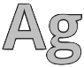

CfPBoK
by
Vadim Zaytsev
Luke Bessant

SLE 2025
⭐
SLE 2026
🛠
Summary
2
papers in
2
bundles
Top 3 popular topics:
T1B: Static Semantics
(
2
times)
T3A: Meta-languages
(
2
times)
T4C: Vertical Transformation
(
1
times)
Top coauthor:
Eric Van Wyk
(
2
times)
Made
2
contributions (see below)
List of contributions
(
SLE 2025
)
Coauthored
Scheduling the Construction and Interrogation of Scope Graphs Using Attribute Grammars
(
Luke Bessant
,
Eric Van Wyk
)
(
SLE 2026
)
Coauthored
AGTix: Concise Use of Scope Graphs in Reference Attribute Grammars
(
Luke Bessant
,
Eric Van Wyk
)
The page is maintained by
Dr. Vadim Zaytsev
a.k.a. @
grammarware
. Last updated: July 2026.